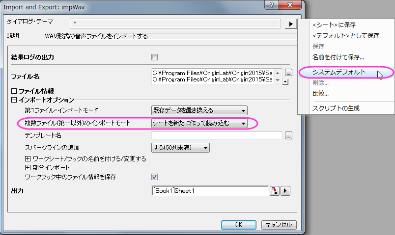
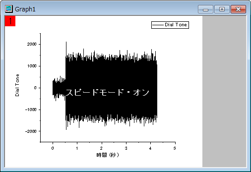

音の処理
sound-processing
サマリー
Originの機能の中にはいくつか便利な信号処理の機能、例えばスムージング、FFTフィルタ、特殊な分析ツールである高速フーリエ変換(FFT)等があります。これらは例えば、音の解析を行う際に使用できます。このチュートリアルでは、ノイズのスペクトル領域を元に音の信号(.WAVファイル)から特定のノイズを取り除きます。
必要なOriginのバージョン:Origin 9 SR0
学習する項目
- サウンドファイル(.WAV)をOriginにインポートする
- サンプリング間隔情報を表示する
- FFTガジェットを使用して、信号の周波数スペクトルを確認する
- 音の信号に対してFFTフィルタを実行する
- フィルタをかけた信号を.WAVファイルとしてエクスポートする
ステップ
このチュートリアルでは、Originのインストールフォルダ内のサブフォルダ、"\Samples\Signal Processing\"の中にある「Origin8 Message.wav」と「Dial Tone.wav」ファイルを使用します。
Origin8 Message.wavファイルを再生すると、後ろで電話の電子音が聞こえることが分かります。2番目のwavファイルはこの電子音を記録したものです。
- Originを起動して新しいプロジェクトを開始し、空のワークブックとワークシートを準備します。
- メニューでファイル：インポート：音声（WAV）と操作してSoundダイアログを開きます。 (ヒント：メニュー項目内に見当たらない場合はファイル：インポート：カスタム化と操作してインポートメニューのカスタマイズダイアログで追加します。)\Samples\Signal Processing\フォルダまでブラウズし、その中にある「Origin 8 Message.wav」と「Dial Tone.wav」をインポートリストに追加します。オプションダイアログを表示するチェックボックスにチェックが付いている事を確認してOKをクリックします。
- Import and Export: impWavダイアログが表示されます。一番上のダイアログ・テーマの隣にある三角形のボタンをクリックし、コンテキストメニューからシステムデフォルトを選択します。インポートオプションノードの複数ファイル(第一以外)のインポートモードドロップダウンからシートを新たに作って読み込むを選択します。
- 
- OKをクリックして2つのサウンドファイルをインポートします。
- それぞれのワークシートで、サンプリング間隔が同じ値である 2.26757E-5 (秒)である事が分かります。列の左上に小さくあるi アイコンをクリックすると、列の追加情報ダイアログが開き、サンプリング間隔の情報を確認できます。OKボタンをクリックして、ダイアログボックスを閉じます。
- ワークシートDial Toneをアクティブにし、列Aを選択してから作図：線図：折れ線と操作して折れ線グラフを作図します。
- 
- このグラフでメニューのガジェット：FFT ROIツールと操作してData Exploration: addtool_curve_fftダイアログを開きます。デフォルトの設定のままでOKをクリックし、データにFFTを実行します。そして、結果と共にFFTPREVIEWグラフも作図します。
- FFTPREVIEWグラフでLogスケールの×印を外し、メニューでグラフ操作：再スケールをして全てを表示と選択してグラフを再スケールします。周波数の分布は主に2000ヘルツよりも下で、最も大きなピークは500ヘルツのあたりにあることが分かります。
- ワークシートOrigin 8 Messageをアクティブにし、列Aを選択します。メニューから解析：信号処理：FFTフィルタと操作してSignal Processing: fft_filtersダイアログを開きます。ダイアログで、再計算をなしに、フィルタの種類をハイパスに、カットオフ周波数の自動チェックを外して値に500を入力します。DCオフセットを保持のチェックを外します。結果をプレビューするにはダイアログ下部にある自動プレビューにチェックを付けます。これで右側のパネルにプレビューが表示されるようになります。なお、この右側パネルは右下の二重の矢印をクリックすることで非表示にしたり表示したりと切り替えられます。
Note:再計算がなしの場合、データの種類を変更するときに、結果を再計算の鍵アイコンがない新しい列にコピーする必要があります。ステップ11で紹介しているので確認してください。
- OK をクリックして、結果を作成します。フィルタを行った結果が浮動小数形式である事が分かります。新しいWAVファイルを作成するには、この形式を整数に変える必要があります。
- 列D(フィルタをかけた結果の列)を選択します。それから右クリックをして列フォーマットを選択し、列プロパティダイアログを開きます。オプションノードのフォーマットを数値に設定し、データ型をShort(2)に設定します。OKボタンをクリックしてこの設定を列Dに適用してダイアログを閉じます。
- 列Dを選択したまま、メニューからファイル：エクスポート：サウンド(WAV)と選択します。このダイアログではファイル名を入力し(例えば、Origin 8 Message_filtered.wav)、分かりやすい場所に保存します。オプションダイアログの表示チェックボックスに、チェックが付いていることを確認します。
- 保存ボタンをクリックすると、 Import and Export: expWAVダイアログが表示されます。列の自動チェックを外し、4に変更します。
Note:列はY列のために指定します。Originはある場合は自動的にサンプリング間隔を探すか対応するXを元に出力します。もしX列が無かったりX列が等間隔ではない場合、エラーメッセージが出力されます。
- OKをクリックして列Dをサウンドファイルとしてエクスポートします。これでこのサウンドファイルを再生し、電子音がなくなったことを確認してみてください。また、スペクトルを確認してみても、電子音の情報は取り除かれていることが確認できます。